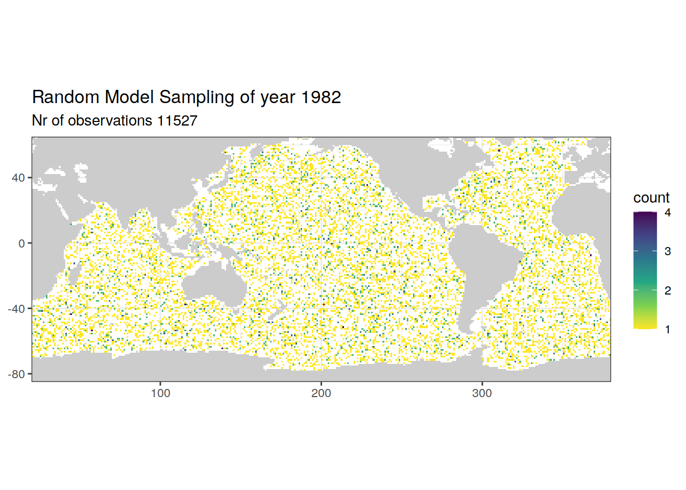
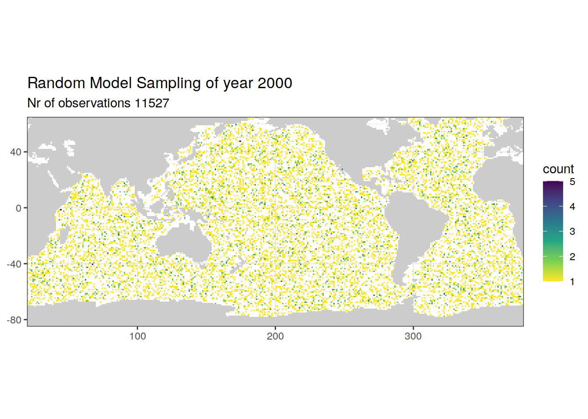
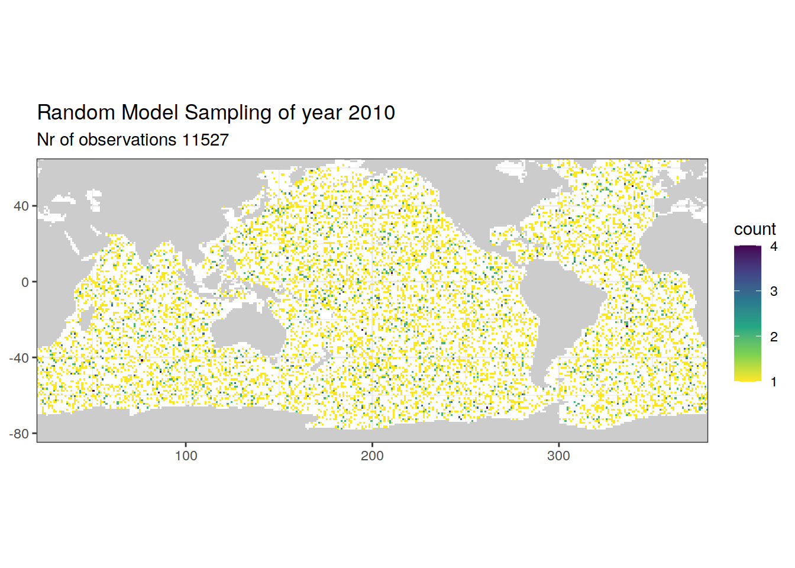
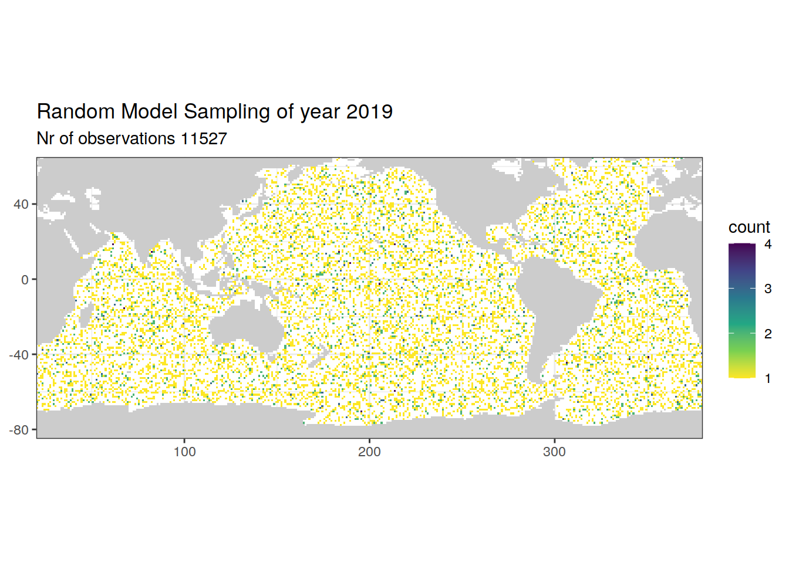
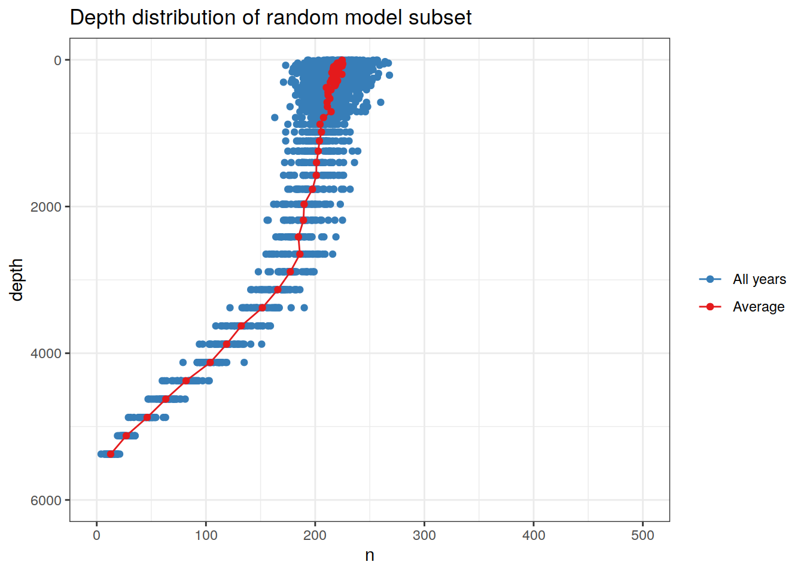
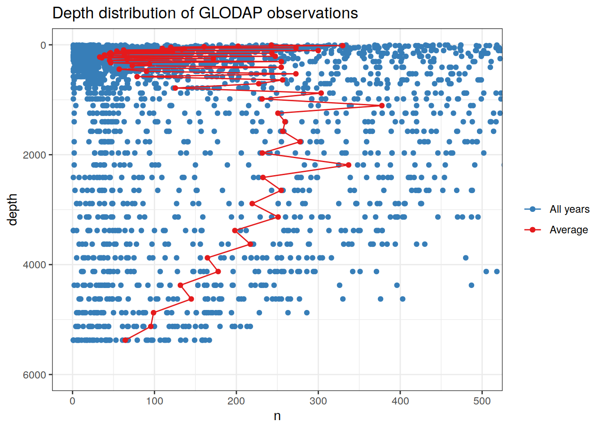

Last updated: 2020-12-23
Checks: 7 0
Knit directory: emlr_mod_preprocessing/
This reproducible R Markdown analysis was created with workflowr (version 1.6.2). The Checks tab describes the reproducibility checks that were applied when the results were created. The Past versions tab lists the development history.
Great! Since the R Markdown file has been committed to the Git repository, you know the exact version of the code that produced these results.
Great job! The global environment was empty. Objects defined in the global environment can affect the analysis in your R Markdown file in unknown ways. For reproduciblity it’s best to always run the code in an empty environment.
The command set.seed(20200707) was run prior to running the code in the R Markdown file. Setting a seed ensures that any results that rely on randomness, e.g. subsampling or permutations, are reproducible.
Great job! Recording the operating system, R version, and package versions is critical for reproducibility.
Nice! There were no cached chunks for this analysis, so you can be confident that you successfully produced the results during this run.
Great job! Using relative paths to the files within your workflowr project makes it easier to run your code on other machines.
Great! You are using Git for version control. Tracking code development and connecting the code version to the results is critical for reproducibility.
The results in this page were generated with repository version 37281b2. See the Past versions tab to see a history of the changes made to the R Markdown and HTML files.
Note that you need to be careful to ensure that all relevant files for the analysis have been committed to Git prior to generating the results (you can use wflow_publish or wflow_git_commit). workflowr only checks the R Markdown file, but you know if there are other scripts or data files that it depends on. Below is the status of the Git repository when the results were generated:
Ignored files:
Ignored: .Rproj.user/
Note that any generated files, e.g. HTML, png, CSS, etc., are not included in this status report because it is ok for generated content to have uncommitted changes.
These are the previous versions of the repository in which changes were made to the R Markdown (analysis/Random_subset.Rmd) and HTML (docs/Random_subset.html) files. If you’ve configured a remote Git repository (see ?wflow_git_remote), click on the hyperlinks in the table below to view the files as they were in that past version.
| File | Version | Author | Date | Message |
|---|---|---|---|---|
| Rmd | 37281b2 | Donghe-Zhu | 2020-12-23 | complete rebuild after jens revision |
| html | e73a8c4 | jens-daniel-mueller | 2020-12-22 | Build site. |
| Rmd | 1c66371 | jens-daniel-mueller | 2020-12-22 | complete rebuild after jens revision |
| html | 6e83d29 | jens-daniel-mueller | 2020-12-22 | Build site. |
| Rmd | 47d36e5 | jens-daniel-mueller | 2020-12-22 | rebuild after Jens revision |
| html | 53b63ba | Donghe-Zhu | 2020-12-20 | Build site. |
| Rmd | f5e5500 | Donghe-Zhu | 2020-12-20 | 1 |
| html | f5e5500 | Donghe-Zhu | 2020-12-20 | 1 |
| Rmd | 07af163 | Donghe-Zhu | 2020-12-20 | 1 |
| html | 07af163 | Donghe-Zhu | 2020-12-20 | 1 |
| html | 9614d92 | Donghe-Zhu | 2020-12-19 | Build site. |
| Rmd | 39657d6 | Donghe-Zhu | 2020-12-19 | rebuild final cleaned version |
| html | c3590c6 | Donghe-Zhu | 2020-12-18 | Build site. |
| html | 7c12d28 | Donghe-Zhu | 2020-12-18 | Build site. |
| Rmd | 1b06f98 | Donghe-Zhu | 2020-12-18 | rebuild final cleaned version |
path_GLODAP_preprocessing <-
paste(path_root, "/observations/preprocessing/", sep = "")
path_cmorized <-
"/nfs/kryo/work/loher/CESM_output/RECCAP2/cmorized_Dec2020/split_monthly/"
path_preprocessing <-
paste(path_root, "/model/preprocessing/", sep = "")# use only three basin to assign general basin mask
# ie this is not specific to the MLR fitting
basinmask <- basinmask %>%
filter(MLR_basins == "2") %>%
select(lat, lon, basin_AIP)GLODAP <-
read_csv(paste(path_GLODAP_preprocessing,
"GLODAPv2.2020_preprocessed.csv",
sep = ""))
GLODAP <- GLODAP %>%
mutate(month = month(date))Here we randomly subset cmorized (1x1) model with variable forcing, according to the total number of GLODAP observations for the whole period from a previously cleaned file. The number for the annual subset remains the same for each year, which could be expressed by the total number of observations divided by number of years.
Besides, Model results are given in [mol m-3], whereas GLODAP data are in [µmol kg-1]. This refers to the variables:
For comparison, model results were converted from [mol m-3] to [µmol kg-1]
# read in a random model
model <-
read_ncdf(paste(path_cmorized, "dissic_CESM-ETHZ_A_1_gr_1982.nc", sep = "")) %>%
as_tibble() %>%
drop_na()
# convert longitudes and mutate month
model <- model %>%
mutate(lon = if_else(lon < 20, lon + 360, lon)) %>%
mutate(month = month(time_mon))
# only consider model grids within basinmask
model <- inner_join(model, basinmask)
# model grid with depth
model_grid_depth <- model %>%
select(month, lat, lon, depth)
rm(model)
# set name of model to be subsetted
model_ID <- "A"
# for loop across years
years <- c("1982":"2019")
# set equal number of random model sampling will be made for each year
n = floor(nrow(GLODAP) / length(years))
for (i_year in years) {
# i_year <- years[1]
# random sample n = GLODAP / years from model grid depth
model_resample_grid_depth <- sample_n(model_grid_depth, n) %>%
arrange(lat, lon, depth, month) %>%
mutate(year = i_year)
# for loop across variables
variables <-
c("so", "thetao", "dissic", "talk", "o2", "no3", "po4", "si")
for (i_variable in variables) {
# i_variable <- variables[2]
# read list of all files
file <-
list.files(
path = path_cmorized,
pattern = paste(
"^",
i_variable,
"_CESM-ETHZ_",
model_ID,
"_1_gr_",
i_year,
".nc",
sep = ""
)
)
print(file)
# read in data
variable_data <-
read_ncdf(paste(path_cmorized,
file,
sep = ""))
# convert to tibble
variable_data_tibble <- variable_data %>%
as_tibble()
# remove open link to nc file
rm(variable_data)
# remove na values
variable_data_tibble <-
variable_data_tibble %>%
filter(!is.na(!!sym(i_variable)))
# convert longitudes
variable_data_tibble <- variable_data_tibble %>%
mutate(lon = if_else(lon < 20, lon + 360, lon))
# only consider model grids within basinmask
variable_data_tibble <- inner_join(variable_data_tibble, basinmask) %>%
select(-basin_AIP)
# mutate variables
variable_data_tibble <- variable_data_tibble %>%
mutate(month = month(time_mon),
!!sym(i_variable) := as.numeric(!!sym(i_variable))) %>%
select(-time_mon)
# random sample for each model variable in specific year
model_resample_grid_depth <-
left_join(model_resample_grid_depth, variable_data_tibble)
}
# add random sample model subset for each year together
if (exists("model_resample")) {
model_resample <-
bind_rows(model_resample, model_resample_grid_depth)
}
if (!exists("model_resample")) {
model_resample <- model_resample_grid_depth
}
}
# calculate model temperature
model_resample <- model_resample %>%
mutate(temp = gsw_pt_from_t(
SA = so,
t = thetao,
p = 10.1325,
p_ref = depth
))
# unit transfer from mol/m3 to µmol/kg
model_resample <- model_resample %>%
mutate(
rho = gsw_pot_rho_t_exact(
SA = so,
t = temp,
p = depth,
p_ref = 10.1325
),
dissic = dissic * (1e+6 / rho),
talk = talk * (1e+6 / rho),
o2 = o2 * (1e+6 / rho),
no3 = no3 * (1e+6 / rho),
po4 = po4 * (1e+6 / rho),
si = si * (1e+6 / rho)
)
# calculate AOU
model_resample <- model_resample %>%
mutate(
oxygen_sat_m3 = gas_satconc(
S = so,
t = temp,
P = 1.013253,
species = "O2"
),
oxygen_sat_kg = oxygen_sat_m3 * (1e+3 / rho),
aou = oxygen_sat_kg - o2
) %>%
select(-oxygen_sat_kg,-oxygen_sat_m3)
# write file for random model sampling
model_resample %>%
write_csv(paste(path_preprocessing,
"GLODAPv2.2020_preprocessed_model_runA_random_subset.csv",
sep = ""))# read in random model sampling file
model_resample <-
read_csv(paste(path_preprocessing,
"GLODAPv2.2020_preprocessed_model_runA_random_subset.csv",
sep = ""))
# plot random sampling cmorized grids in each year
years <- c("1982", "1990", "2000", "2010", "2019")
for (i_year in years) {
# i_year <- years[1]
model_resample_year <- model_resample %>%
filter(year == i_year)
print(
map +
geom_bin2d(data = model_resample_year,
aes(lon, lat),
binwidth = 1) +
scale_fill_viridis_c(direction = -1) +
coord_quickmap(expand = 0) +
labs(
title = paste("Random Model Sampling of year", i_year),
subtitle = paste("Nr of observations", nrow(model_resample_year)),
x = "Longitude",
y = "Latitude"
)
)
}



# Calculate and plot depth distribution of model subset
model_resample_depth <- model_resample %>%
count(depth, year)
model_resample_depth_average <- model_resample_depth %>%
group_by(depth) %>%
summarise(n = mean(n))
model_resample_depth_average %>%
arrange(depth) %>%
ggplot(aes(n, depth)) +
geom_point(data = model_resample_depth,
aes(n, depth, col = "All years")) +
geom_point(aes(n, depth, col = "Average")) +
geom_path(aes(n, depth, col = "Average")) +
scale_color_brewer(palette = "Set1",
name = "",
direction = -1) +
scale_y_reverse() +
coord_cartesian(xlim = c(0,500),
ylim = c(6000,0)) +
labs(title = "Depth distribution of random model subset")
# Calculate and plot depth distribution of GLODAP data
# Depths gridded to model depth levels for comparison
GLODAP_depth <- GLODAP %>%
mutate(depth = as.numeric(as.character(cut(depth,
c(0,unique(model_resample_depth_average$depth)),
labels = unique(model_resample_depth_average$depth))))) %>%
count(depth, year)
GLODAP_depth_average <- GLODAP_depth %>%
group_by(depth) %>%
summarise(n = mean(n))
GLODAP_depth_average %>%
arrange(depth) %>%
ggplot(aes(n, depth)) +
geom_point(data = GLODAP_depth,
aes(n, depth, col = "All years")) +
geom_point(aes(n, depth, col = "Average")) +
geom_path(aes(n, depth, col = "Average")) +
scale_color_brewer(palette = "Set1",
name = "",
direction = -1) +
scale_y_reverse() +
coord_cartesian(xlim = c(0,500),
ylim = c(6000,0)) +
labs(title = "Depth distribution of GLODAP observations")
| Version | Author | Date |
|---|---|---|
| 6e83d29 | jens-daniel-mueller | 2020-12-22 |
sessionInfo()R version 4.0.3 (2020-10-10)
Platform: x86_64-pc-linux-gnu (64-bit)
Running under: openSUSE Leap 15.1
Matrix products: default
BLAS: /usr/local/R-4.0.3/lib64/R/lib/libRblas.so
LAPACK: /usr/local/R-4.0.3/lib64/R/lib/libRlapack.so
locale:
[1] LC_CTYPE=en_US.UTF-8 LC_NUMERIC=C
[3] LC_TIME=en_US.UTF-8 LC_COLLATE=en_US.UTF-8
[5] LC_MONETARY=en_US.UTF-8 LC_MESSAGES=en_US.UTF-8
[7] LC_PAPER=en_US.UTF-8 LC_NAME=C
[9] LC_ADDRESS=C LC_TELEPHONE=C
[11] LC_MEASUREMENT=en_US.UTF-8 LC_IDENTIFICATION=C
attached base packages:
[1] stats graphics grDevices utils datasets methods base
other attached packages:
[1] marelac_2.1.10 shape_1.4.5 gsw_1.0-5 testthat_3.0.1
[5] rqdatatable_1.2.9 rquery_1.4.6 wrapr_2.0.4 lubridate_1.7.9
[9] stars_0.4-3 sf_0.9-6 abind_1.4-5 metR_0.8.0
[13] scico_1.2.0 patchwork_1.1.0 collapse_1.4.2 forcats_0.5.0
[17] stringr_1.4.0 dplyr_1.0.2 purrr_0.3.4 readr_1.4.0
[21] tidyr_1.1.2 tibble_3.0.4 ggplot2_3.3.2 tidyverse_1.3.0
[25] workflowr_1.6.2
loaded via a namespace (and not attached):
[1] fs_1.5.0 RColorBrewer_1.1-2 httr_1.4.2
[4] rprojroot_2.0.2 tools_4.0.3 backports_1.2.1
[7] R6_2.5.0 KernSmooth_2.23-18 DBI_1.1.0
[10] colorspace_2.0-0 withr_2.3.0 tidyselect_1.1.0
[13] compiler_4.0.3 git2r_0.27.1 cli_2.2.0
[16] rvest_0.3.6 xml2_1.3.2 labeling_0.4.2
[19] scales_1.1.1 checkmate_2.0.0 classInt_0.4-3
[22] digest_0.6.27 oce_1.2-0 rmarkdown_2.5
[25] pkgconfig_2.0.3 htmltools_0.5.0 dbplyr_1.4.4
[28] rlang_0.4.9 readxl_1.3.1 rstudioapi_0.13
[31] farver_2.0.3 generics_0.1.0 jsonlite_1.7.2
[34] magrittr_2.0.1 Matrix_1.2-18 Rcpp_1.0.5
[37] munsell_0.5.0 fansi_0.4.1 lifecycle_0.2.0
[40] stringi_1.5.3 whisker_0.4 yaml_2.2.1
[43] grid_4.0.3 blob_1.2.1 parallel_4.0.3
[46] promises_1.1.1 crayon_1.3.4 lattice_0.20-41
[49] haven_2.3.1 seacarb_3.2.14 hms_0.5.3
[52] knitr_1.30 pillar_1.4.7 reprex_0.3.0
[55] glue_1.4.2 evaluate_0.14 RcppArmadillo_0.10.1.2.0
[58] data.table_1.13.4 modelr_0.1.8 vctrs_0.3.6
[61] httpuv_1.5.4 cellranger_1.1.0 gtable_0.3.0
[64] assertthat_0.2.1 xfun_0.19 lwgeom_0.2-5
[67] broom_0.7.3 RcppEigen_0.3.3.9.1 e1071_1.7-4
[70] later_1.1.0.1 viridisLite_0.3.0 class_7.3-17
[73] units_0.6-7 ellipsis_0.3.1